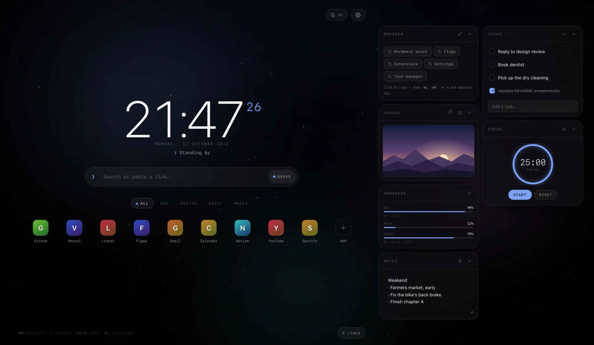
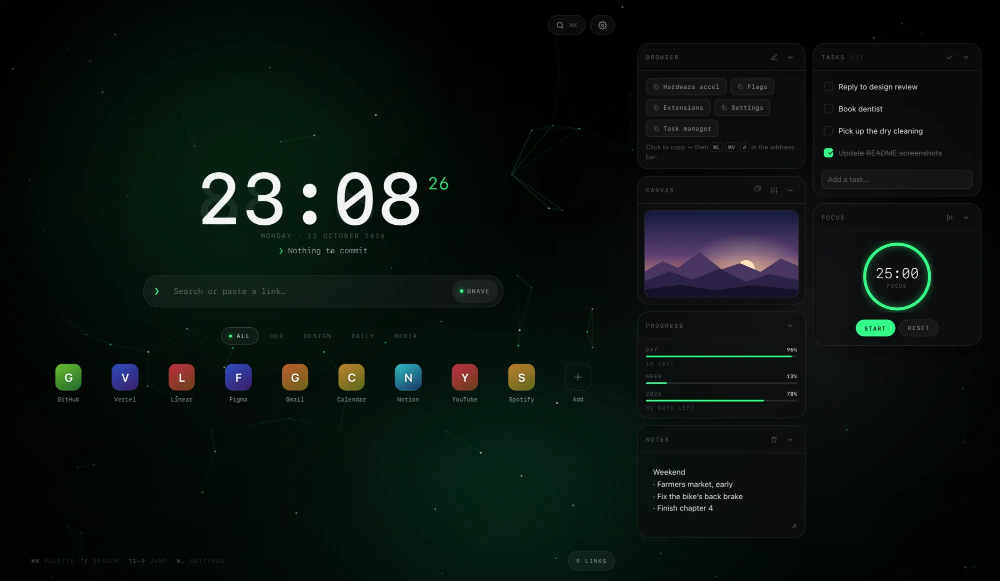
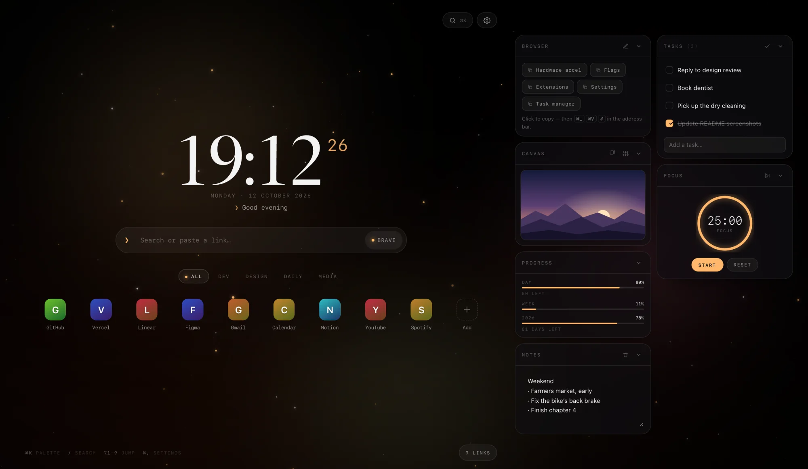
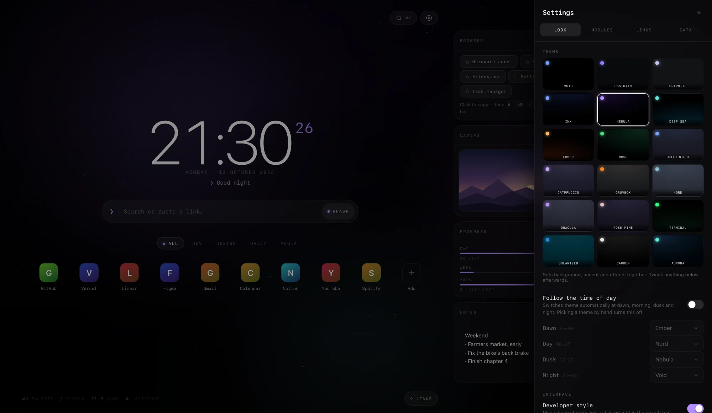
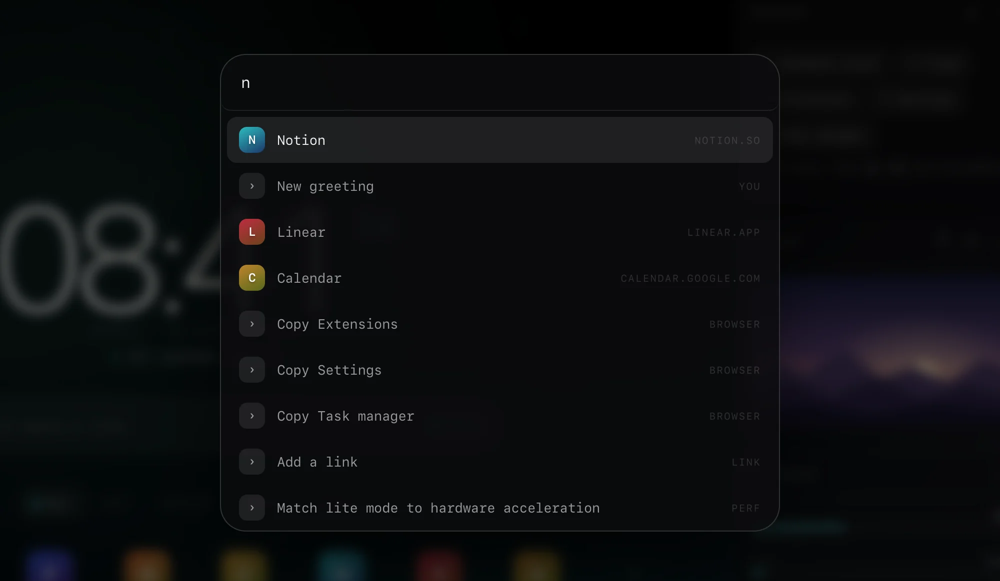

A clock with something to say
Twelve faces, from ultra-light to a seven-segment LED. Under it, a greeting drawn from 33 weighted rules that notice the hour, the weekday, the weather, open tasks and how long you’ve been away.
The new tab page I actually wanted.
A custom new tab page for Brave: a clock with something to say, search with bangs, the links I use and a small dock of tools — over a slow aurora and a field of particles that drifts on its own and reacts to the cursor. Settings, notes and tasks stay in the browser. No accounts, no tracking.

01Why it exists
Void is my own homepage for Brave. It doesn’t solve a big problem. I wanted nice backgrounds, some effects and particles, and my shortcuts one keystroke away — on the page every new tab opens to. It makes browsing a little better.
The first version was a single 4,274-line HTML file. The same day, I moved the script into its own file and added a manifest, so Brave loads it as an extension and the new tab opens with an empty address bar, ready to type into.
I’m a developer, so it leans that way. Developer style is on by default: monospace chrome, a ❯ prompt in the search bar, an ISO date if you want one, and greetings like “Working directory clean”.
One later change: the small hours got their own voice. At 2 am a joke about caffeine isn’t what lands, so between midnight and four the greeting gets quieter — “It’s late, not final.” “Rest counts as progress.”
02The particle field
Every particle gets a depth, z, between 0.2 and 1. It sets the size, the brightness and how far that particle shifts as the cursor moves — near ones more, far ones less. That one number is all the 3D there is: plain Canvas 2D, no WebGL.
A live particle field drawn on a canvas, with Void’s clock, date and greeting on top. Use the controls below to change it.
—
Ported from void.js: the same draw routines and knobs, with the browser window swapped for this box. The real page has 15 modes. When your cursor isn’t over the field, an invisible one drifts in a slow loop so there’s something to follow. The clock and greeting lines are the real ones; this greeting just doesn’t know about your weather, tasks or visits.
03In the browser
A theme sets the background, accent, aurora, particle mode, grain and vignette together. It can also follow the clock, with its own pick for dawn, day, dusk and night.




Real screenshots of the app, filled with demo data: invented links, notes and tasks, and a staged time of day.
04What it does
Twelve faces, from ultra-light to a seven-segment LED. Under it, a greeting drawn from 33 weighted rules that notice the hour, the weekday, the weather, open tasks and how long you’ve been away.
Eleven engines, each with a prefix — !g, !gh and the rest. Type an address instead and it just goes there.
Drag to reorder, right-click to edit. Letter tiles get a colour from the hostname. It imports Brave’s bookmarks: folders become groups, duplicates are skipped.
Eighteen themes and twelve accents — or any colour, or your own image, fitted, darkened and blurred to taste.
Notes, tasks with undo, a focus timer with a ring, day / week / year progress, and a canvas for your own images and GIFs.
⌘ K for the palette, ⌘ , for settings, / to search, ⌥ 1–9 to open a link. Start typing anywhere and it lands in search.
05How it’s built
Two files and a manifest. No libraries, no web fonts — every clock face uses fonts that ship with macOS. Manifest V3 forbids inline scripts on extension pages, so the script lives in its own file.
stars(f, t, sp, par){
for (const p of parts){
p.y -= sp * .28 * p.z * (p.r + .4);
if (p.y < -4){ p.y = innerHeight + 4; p.x = Math.random() * innerWidth; }
const x = p.x + tx * p.z * 26 * par;
const y = p.y + ty * p.z * 20 * par;
ctx.globalAlpha = (.45 + .55 * Math.abs(Math.sin(t / 1400 + p.p))) * p.z * .8;
ctx.fillStyle = partColor(f, p);
ctx.beginPath(); ctx.arc(x, y, p.r * p.z, 0, Math.PI * 2); ctx.fill();
}
},06Build notes
Lite mode drops the blur, glow, grain and particles when hardware acceleration is off. No browser says that directly, so Void asks WebGL twice: is the renderer a software one, like SwiftShader or llvmpipe — and is a context requested with failIfMajorPerformanceCaveat refused? Brave’s fingerprinting protection can hide the first answer, but not the second. The check runs when the browser is idle, so first paint uses the saved setting, and it hands its WebGL contexts back afterwards.
The canvas never renders above 1.5× the screen’s pixels. Particle count scales with screen area, with caps for the expensive modes. Bokeh stamps one pre-rendered soft sprite instead of building a gradient for every particle. When the field is off, lite mode is on or the tab is hidden, the canvas memory is handed back — and the mousemove handler does nothing at all.
On wide screens the dock wraps into two columns. CSS column-wrap can’t be told “at most two”, so on a short window a third column would quietly swallow cards. The code turns wrapping on, measures, and turns it off again if any card spilled out.
Images go to IndexedDB, with localStorage as the fallback when the page runs from a file. GIFs and WebPs are stored untouched so their animation survives; background photos are scaled down to 2,560 px. When a save fails, the message says whether storage is full or blocked — they have different fixes.